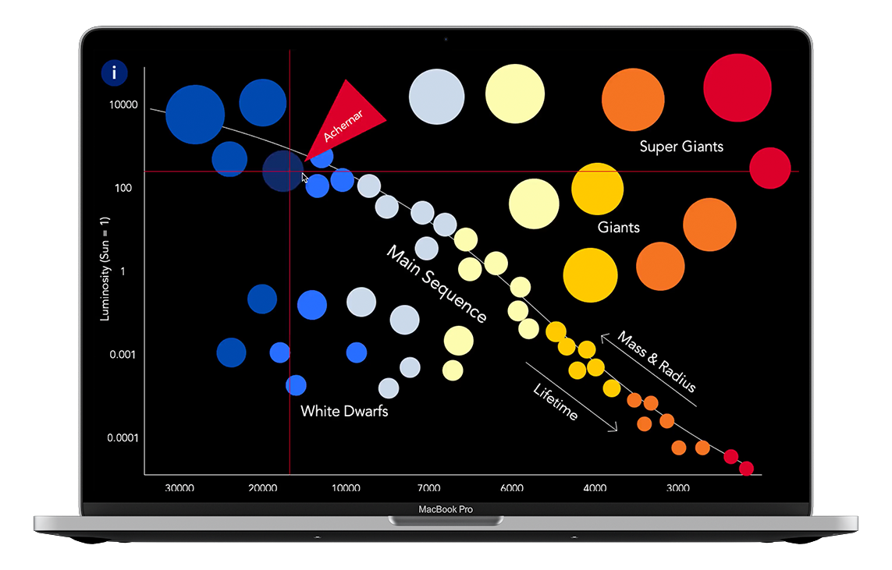
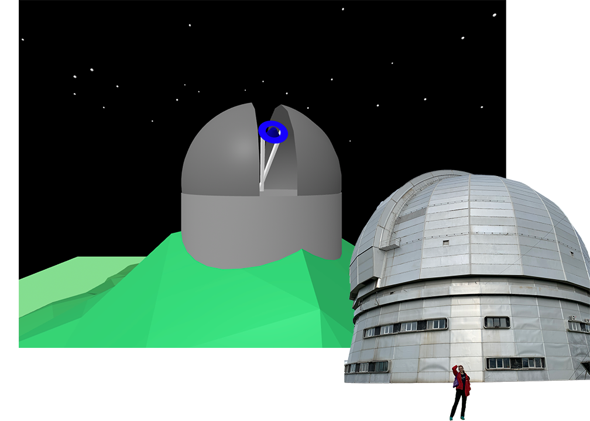

<sketch id="processing astrophysics" date="april2020"/>
see on github >
documentation
Wait, what does Space have to do with music?
Even though piano keys might not make the same sounds planets and celestial bodies themselves apparently do, I would argue that playing "the space piano" is amazing for your astrophysics learning process.
The problem
As I was sitting in my Quarks to Cosmos Core science class in my Junior year, I couldn't help but notice that most of my classmates didn't share my enthusiasm about astrophysics, even as it was being adapted for humanities and social science students. What I also noticed, however, is the excitement that ran through the classroom when our professor decided to illustrate electron energy levels by climbing on a ladder and throwing colorful balls at us.
Many interaction designers have been writing about how crucial play is to our adult lives, mental and physical well-being. Furthermore, practical application of elements of play to solve real-life problems – gamification – was credited for its significant effects education and popularization of sciences. As I began coding in the Processing Development Environment, and working on little sketches such as grand budapest, I kept constantly thinking about endless opportunities interactive experiences can provide for education.
The solution
My design process revolved around finding the right form of experience that would convey the most information about main stars on our sky. Building on the idea of associative learning, the "space piano" connects each key (and therefore every sound) of a piano to a particular star, from Betelgeuse to Sirius. With this approach, I engaged with the highly associative and subjective nature of music to invoke powerful associations and activate the user's senses.
The piano is intended for engagement on multiple levels. The user can play one key at a time and take time to read information about each star; they can also compose easy melodies that would help them mnemonically memorize larger amounts of information.
The process
The main stylistic decision I had to make was about how the piano keyboard itself was to be displayed. Constrained by the size of a laptop screen and applying prototype thinking, I decided to only represent one octave. Knowing the importace of touch stimuli and haptics in digital experiences, I worked on the reprsentation of piano keys that would bring them closer to a physical piano while also matching a theme of "cosmos under your fingertips".
Findings
The project was a big success in creative coding and astrophysics classrooms alike. One of the most interesting outcomes of the project, based on user feedback, was the fact that most users saw it as an aesthetic experience (i.e. enjoying a combination of sounds and visuals) and did not perceive it from an educational perspective. However, many reported spending an ample amount of time playing with the piano, leading them to retain at least some information about stars and increasing their interest in celestial astrophysics.
Space for growth
The first step to expand this prototype into a real-world tool would be finding a way to add the entire piano keyboard to represent more astronomical objects.
What's more? I have a lot of interest to make this sketch more synesthesic and associative: sounds corresponding to stars based on how heavy or light, luminous or dark, quick or slow, old or young they are. I would also love to work to expand on music theory applications here, and make sequences of objects appear based on major and minor scales, time signature or intervals.
This is merely a protoype of what I could see becoming a science museum object, beautiful visualization tool for music concerts, or a go-to educational presentation builder. The sky is the limit! (pun intended)
Similar projects

a star's life
an immersive tool for learning astrophysics;
a visualization of a lifespan of a low-mass star like the Sun
learn more >

visit the observatory
an AR motion detection experience that tells a story of life and scientific research in the Special Atrophysics Observatory of the Russian Academy of Science learn more >